SELECTED WORK
Work from the workshop.
Explore the finished work, workshop details and applications.
21 examples
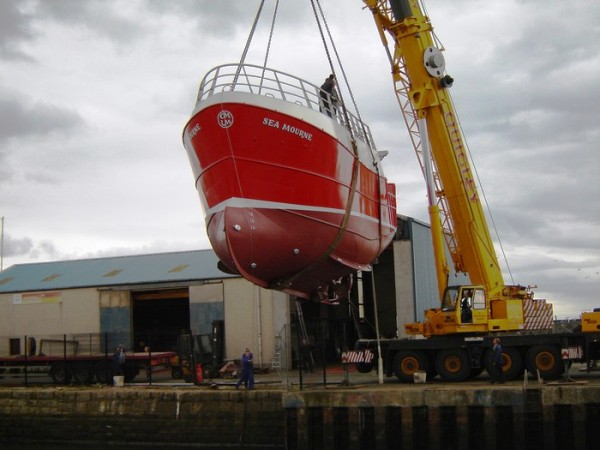
Boat Building
Red fishing vessel suspended by a crane beside the harbour ↗
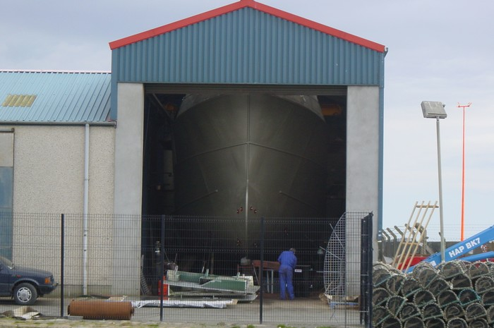
Boat Building
Vessel hull under construction inside the workshop ↗
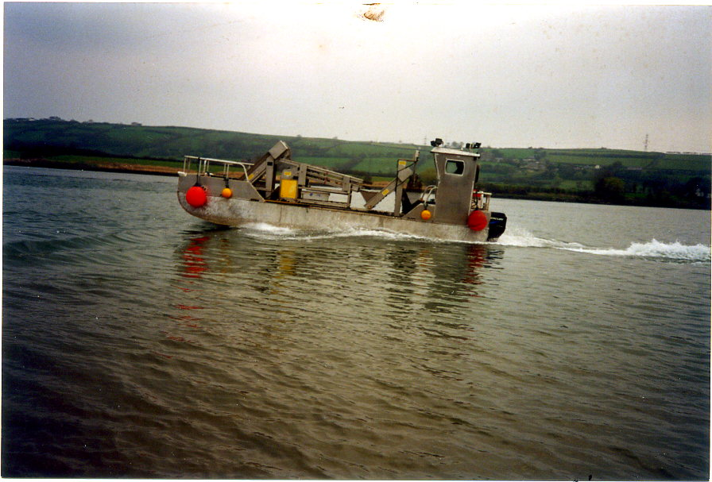
Aluminium Fabrication
Aluminium workboat moving across the harbour ↗
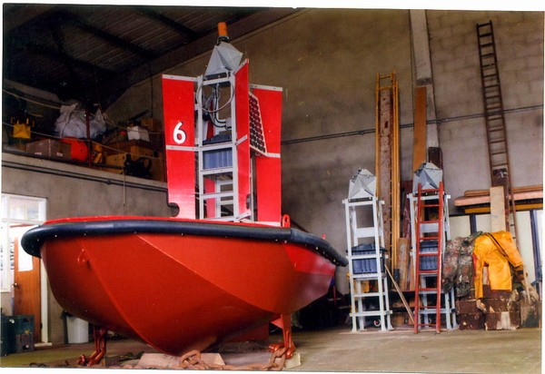
Navigation Buoys
Fabricated navigation buoy inside the workshop ↗
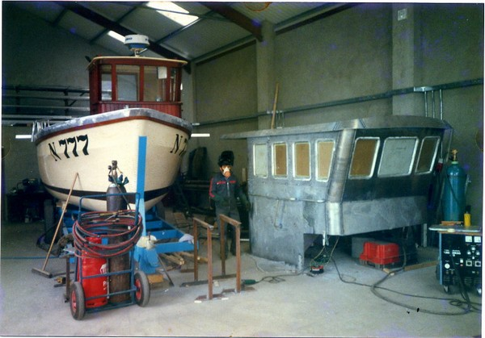
Boat Refurbishment
Fishing vessel and fabricated wheelhouse in the workshop ↗
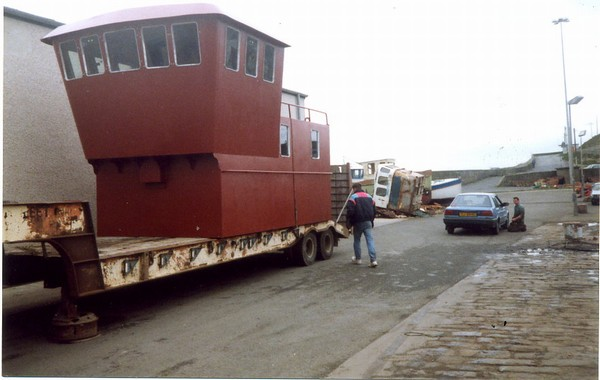
Boat Refurbishment
Fabricated steel wheelhouse outside the workshop ↗
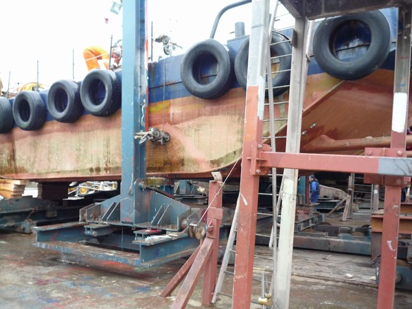
Vessel Lengthening
Workboat undergoing hull lengthening ↗
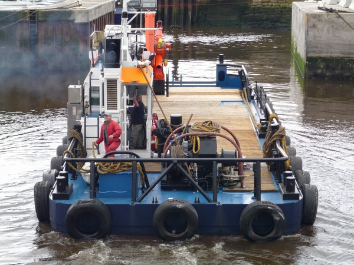
Vessel Lengthening
Completed workboat alongside the harbour ↗
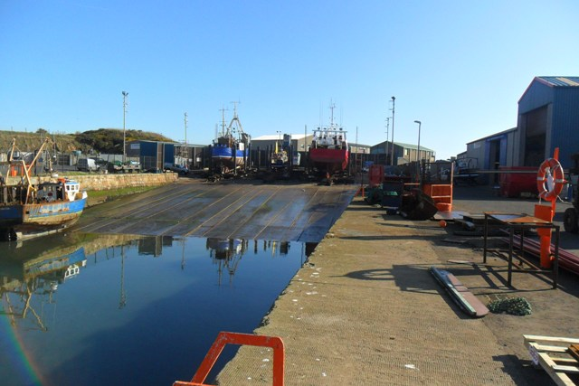
Harbour
Kilkeel Harbour slipway ↗
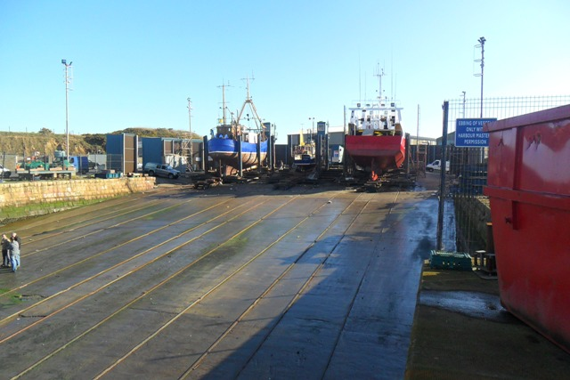
Harbour
Fishing vessels on the slipway ↗
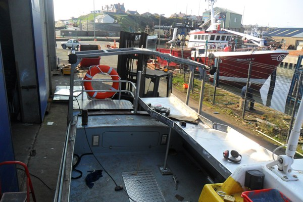
Bespoke Manufacturing
Bespoke fabricated work area aboard a fishing vessel ↗
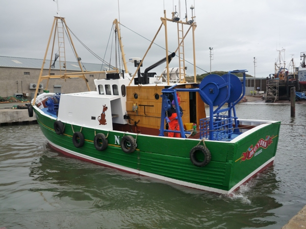
Shelter Decks
Green fishing vessel with shelter deck in the harbour ↗
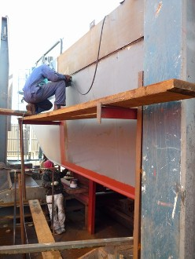
Fabrication Welding
Metal fabrication inside the workshop ↗
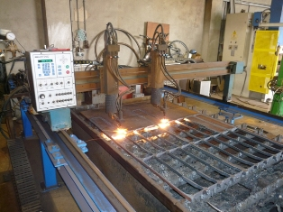
Profile Cutting
Profile-cutting machinery ↗
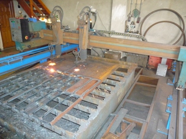
Profile Cutting
Cut metal profiles ↗
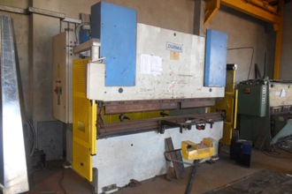
Folding
Workshop press-brake equipment ↗

Machining
Machining equipment in the workshop ↗
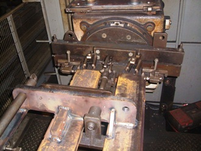
Machining
Engineering production machinery ↗
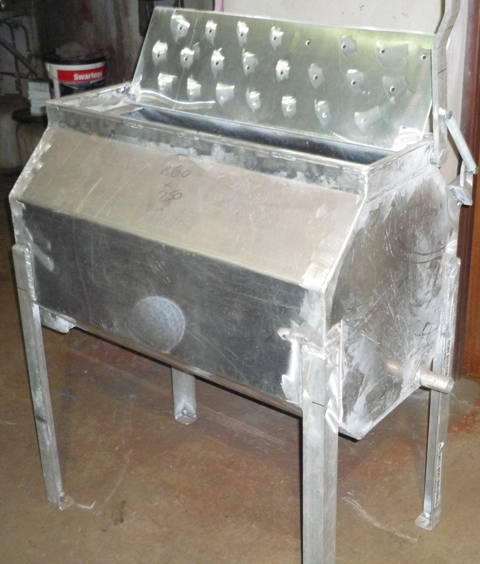
Prawn Washers
Fabricated prawn-washing equipment ↗
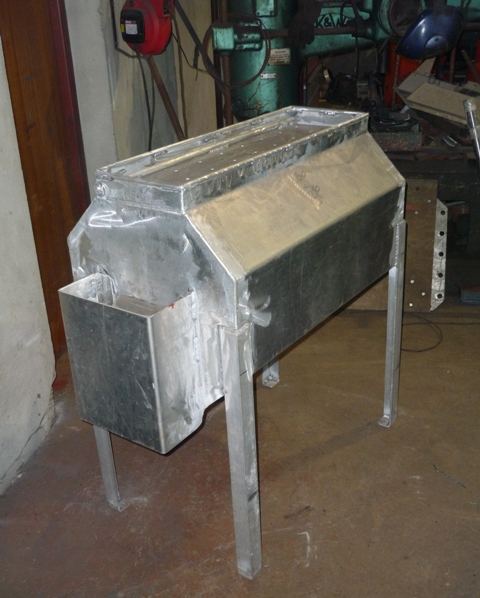
Prawn Washers
Metal prawn-washing equipment ↗
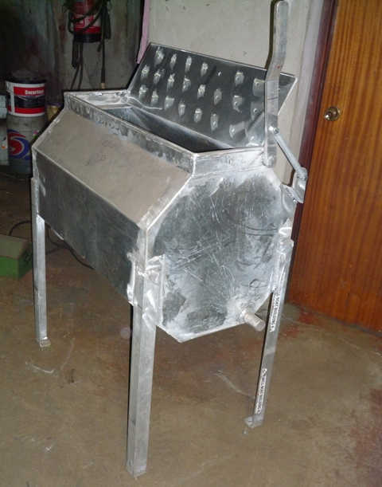
Prawn Washers